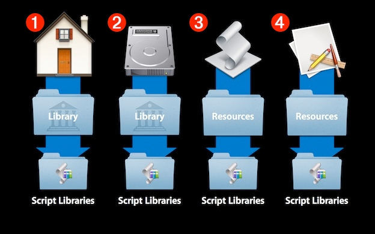

AppleScript Libraries provide a new plugin architecture for extending the power and abilities of AppleScript. AppleScript Libraries are user-created script files and bundles, composed in AppleScript or AppleScript/Objective-C, which contain specialized commands that can be referenced in scripts to provide extra or “missing” functionality.
Greater Scope
As mentioned above, AppleScript libraries written using AppleScript/Objective-C, provide access to standard Cocoa classes and methods. In OS X Mavericks, the number of available Cocoa methods increases dramatically with the introduction of the new “use statements” feature, which enables script libraries to access specified frameworks, such as WebKit.
Terminology
To make it easier to remember and implement library commands, AppleScript Libraries can be written to publish their own scripting terminology, viewable to users using the AppleScript Editor’s dictionary viewer.
Installation and Distribution
AppleScript Libraries are made universally available on a computer through their placement in new Script Libraries directories created in the standard OS Library domains, enabling AppleScript Libraries to be easily distributed between multiple computers running OS X Mavericks.
AppleScript Libraries are installed and made available for use by AppleScript scripts, by placing their files within a folder titled: “Script Libraries”. A Script Libraries folder can reside in a variety of locations, depending on how you want to define their availability on the computer.
The illustration below outlines four possible locations for a Script Libraries folder:

(1) Home Library folder - To enable the use of an AppleScript Library by the current user account, place AppleScript Library files inside a Script Libraries folder located in the user’s Library folder.
(2) Computer Library folder - To enable the use of an AppleScript Library by all user accounts, place AppleScript Library files inside a Script Libraries folder located in the computer’s Library folder.
(3) Applet/Script Bundle Resources folder - To enable the use and distribution of an AppleScript Library by a script applet, or script bundle ("scptd"), place AppleScript Library files inside a Script Libraries folder located in the applet’s or script bundle’s Resources folder. NOTE: Applet and script bundle libraries are only available to scripts running inside the applet’s process, or the application running the script bundle.
(4) Application Resources folder - To enable the use and distribution of an AppleScript Library by an application that executes AppleScript scripts, place AppleScript Library files inside a Script Libraries folder located in the application’s Resources folder. NOTE: Application-bundle libraries are only available to scripts running inside that application’s process.